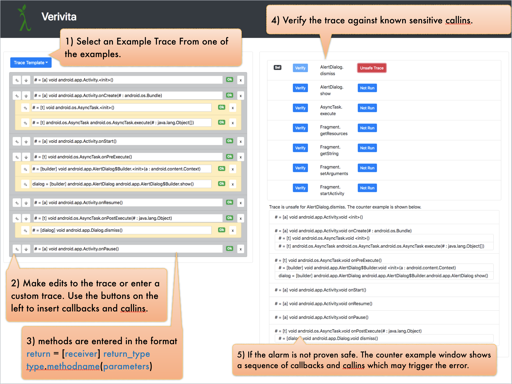

Verivita is a dynamic verification tool for checking that an app respects event-driven application-programming protocols. To create apps that behave as expected, developers must follow complex and often implicit asynchronous programming protocols. Such protocols intertwine the proper registering of callbacks to receive control from the framework with appropriate application-programming interface (API) calls that can then in turn affect the set of possible future callbacks. An app violates a protocol when, for example, it calls a particular API method in a state of the framework where making such a call is invalid. Verivita works by recording a trace of an Android app and then automatically searching for nearby executions that could fail. It either produces a trace witnessing a protocol violation or a proof that no such trace is realizable. Such a trace shows how a buggy app might violate a protocol even when no concrete manifestation of the error was ever observed.
